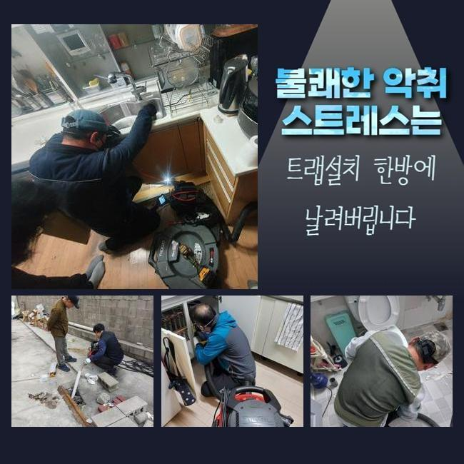
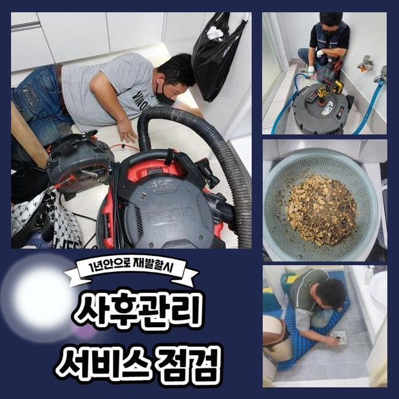
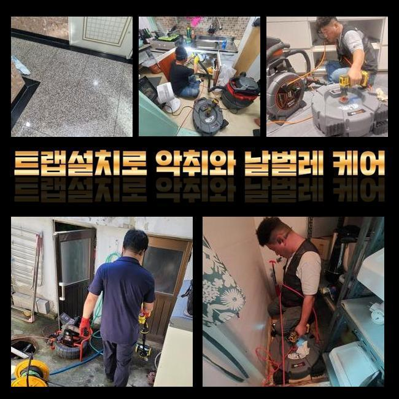
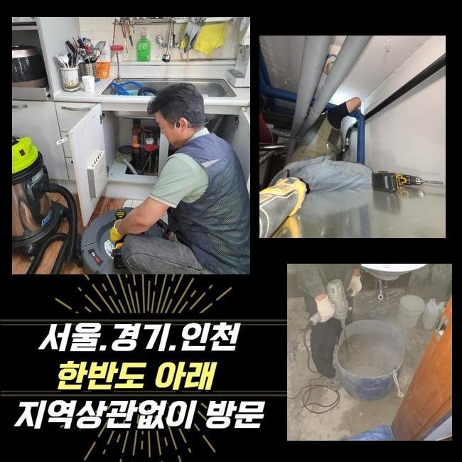
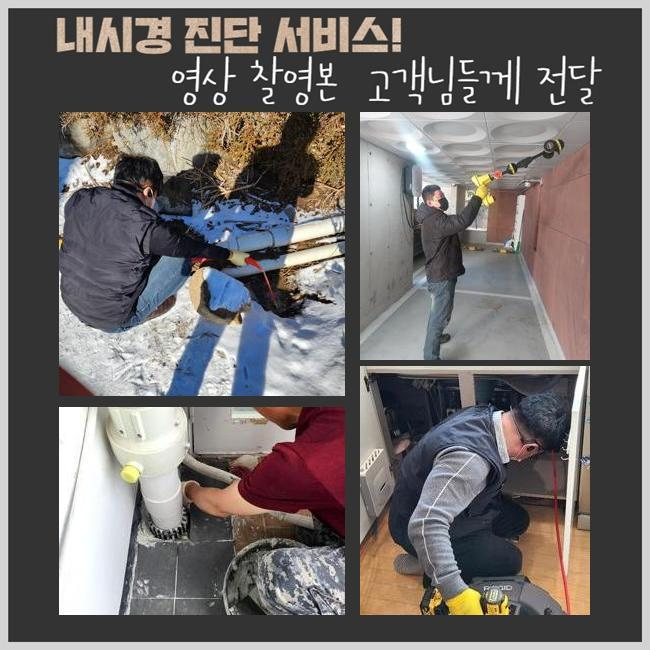
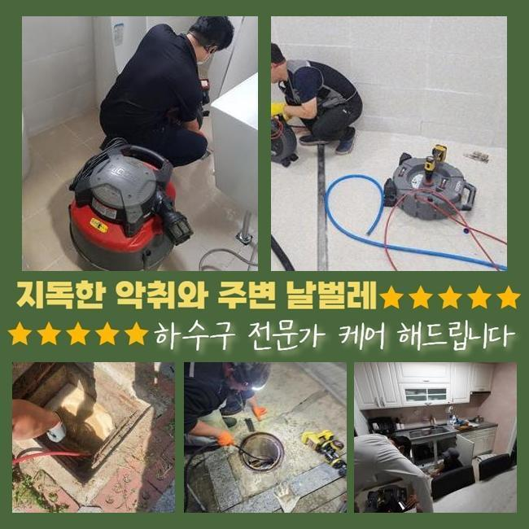

🏠 양평 강하면오수관뚫음 청운면 악취차단 배관뚫는업체
용인 싱크대막힘 전문 시공 후기

📋 작업 개요
- 위치: 용인
- 서비스 유형: 싱크대막힘, 하수구막힘, 배관막힘, 누수수리, 역류해결, 뚫는업체, 고압세척, 설비공사, 악취차단
- 작업 일시: 2024. 10. 9. 12:53
- 업체명: 하수구수사대 (010-5615-2118)
🔍 문제 상황
양평 강하면오수관뚫음 청운면 악취차단 배관뚫는업체
예상했던것보다 여러장소에서 막히는문제가 발생하고있어요
급작스레 막히게되어 곤란에 처하시기도해요
배관내부에 잔해물질이 쌓인것을 육안만을 이용해서는 살펴볼수없으므로 갑자기막혔다고 생각하시는거랍니다
물넘침과 악취증상도 동반될경우 일상생활을 제대로하기 어려우므로 신속하게 전문가에게 맡기셔야합니다
최근에 내방한곳으로 물넘침과함께 다양한증상이 일어난 상황이었습니다
씽크대시설이나 화장실시설은 주로 이용하기에 최대한빨리 해결해야해요
하수구이용시 이상한증상이 발현했을때 신속히 전문장비들을 사용하여 해결해줄수있는 전문가에게 문의하셔야해요
막힘현상이 발생했을때 대대수의경우 셀프조치를통해 개선해보고자 노력하시고는해요
온수의물을 다량으로 부어버리시거나 클리너제품들을 막힌곳에 집어넣어 해결하려고 하십니다
이런식으로 시도해봐도 쉽사리 해결되지않는 요인입니다
되려시간이 지체되서 악화될수있기에 심각해지기전에 대응하셔야해요!
장기간 쌓인찌꺼기는 주변마트에서 살수있는 제품으로 개선하기 어렵기때문이죠

🔎 원인 분석
💡 전문가 진단: 정밀 진단 장비를 사용하여 슬러지의 고착 여부를 판명하고 타격/세척 작업을 실시했습니다.
이렇기때문에 하수도가 막히게되었다면 무리해서 건드리지않고 요청해주시는것이 좋겠습니다
문의주신곳에서 어떤원인으로 막혔는지 파악해보기 시작했어요
들여다본결과 화장실바닥에서 문제가생긴걸 확인했습니다
노후화된 아파트시설이었고 점검받았던적이 없었기에 오염물질이 하수관속에 퇴적되어있는것을 예상할수있었어요
배관구조를 파악하여 바닥쪽에있는 하수구에 물을흘려봤죠
물이느린속도로 빠져나가고 있었으며 역류현상까지 일어나고있었습니다
종합적으로 상태를보니 배관시스템이 망가졌다는것을 발견했어요
배관이막혔을때 중요한것을 설명드리자면 해당증상을 방치하시면 안됩니다
오랫동안 내버려둘수록 배관손상이 일어나 누수현상으로 발발될확률이 높기때문이에요
조그만한 손상이발현되도 심각해질수있는 하수도이기때문에 큰피해를 보시기전에 신속대응으로 해결해야한답니다
막혀버린이유가 무엇인지 파악하기위하여 배관안속에 내시경카메라를 투입시켰어요
내시경기기를 사용하면 눈으로살피기 어려운곳에 발현한일까지 파악할수있어요
하수구안속에 잔해물질이 쌓인상태를 체크했어요

🔧 작업 과정
이물을무리해서 분해하기보다는 약물을투입시켜 중화시켜보기로 했는데요
굳어버린 잔해물질을 클리너를통해 녹여주는작업을 진행한것인데요
돌처럼단단한 고착물질을 타격을입혀 제거할경우 손상문제로 연결될수있어요
약물을부은후 배수관안쪽에 분쇄기구를 집어넣었어요
해당증상이 일어났을때 많이쓰는 기계로는 석션기와 샤프트기입니다
샤프트장비의경우 강한압으로 석회물들을 분해시키기 좋아요
석션장비의경우 흡입시켜 찌꺼기들을 제거해주는 도구랍니다
오염물의종류를 살피고 무슨기기를 활용해야할지 꼼꼼히 골라봐야합니다
현장상태가 어떠한지에따라 활용하는기계에 차이를보이기에 그런것인데요
이번현장은 샤프트기계로 이물질들을 세밀하게 분쇄시켰어요
녹아있는 상태이다보니 전과다르게 문제없이 세척할수있었죠
잔여물의경우 흡입장비를 활용하여 제거했답니다
찌꺼기가 흡입되면서 신속히 개선되는것을 살필수있었죠
깨끗하게 제거하고자 반복하면서 하수구세척을 진행했는데요
하수구안에 이물질들이 쌓여진 상태였기에 모든과정이 마쳐지기까지 오랜시간이 걸렸어요
늦게의뢰를 맡기셨다면 파손문제로인해 대공사가 이어질수도 있었답니다
다양한과정이 진행되면 생각하지못한 경우가 종종 생기기도합니다
어려운 현장이더라도 깔끔히조치해 처리해드리므로 작업이필요하다면 업체선정시 꼼꼼하게 요소들을 살펴봐주세요!
스케일링을 끝내고나서 깔끔해졌는지 살펴보기위해 배관CCTV를 이용했습니다
깊은위치까지 섬세히 조사해본결과 깔끔해졌다는걸 확인했답니다
내부쪽에 슬러지들이 투입되지않도록 방지하기위하여는 촘촘하게 이루어져있는 거름망설치로 할수있는데요


✅ 작업 완료
정기로 하수구점검을 받아보시는게 도움되실거에요
점차 이물질이 쌓이게되며 막힘문제가 발생하므로 주기적인 점검을통해 배관막힘이 발생하지않게 신경써야합니다
확실히 뚫렸는지 알아보고자 배수시스템을 살펴봤어요
물이시원히 빠져나가는것을 보았습니다
이상현상들을 모두해결후 원래의 배수관으로 되찾게되었죠
내버려두지마시고 신속하게 하수구관리를 받아보시는게 좋은방법이니 언제든 찾아주세요




⚠️ 베란다 누수 및 방수 관리 방법
- ✅ 비가 많이 올 때 창틀 주변이나 아래층 천장에 얼룩이 생기는지 정기적으로 확인해 보세요.
- ✅ 우수관 주변 실리콘 마감이 들뜨거나 깨진 틈새가 있는지 손상 여부를 수시로 체크하세요.
- ✅ 베란다 바닥 타일의 줄눈(메지)이 소실되면 그 틈으로 물이 침투하여 누수가 유발됩니다.
- ✅ 누수 의심 증상 발견 시 방치하면 아래층 손실이 커지므로 즉시 전문가의 진단을 받으십시오.
💡 핵심 정리
- 확실한 장비 작업(내시경 점검 및 샤프트 스케일링)으로 원인을 뿌리 뽑습니다.
- 작업 후 1년 이내에 동일한 부위 재발 시 100% 무상 A/S 서비스를 보장합니다.
- 서울 · 경기 · 인천 전 지역에 24시간 언제든 긴급 출동할 수 있도록 항시 대기 중입니다.
❓ 자주 묻는 질문 (FAQ)
🚨 용인 싱크대막힘 문제로 고민이신가요?
정확한 원인 진단과 확실한 시공으로 재발 없는 해결을 약속드립니다.
24시간 긴급 출동 | 서울 · 경기 · 인천 전지역 | 1년 내 재발 시 무상 A/S